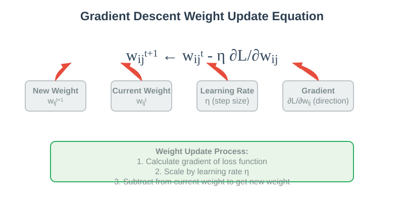
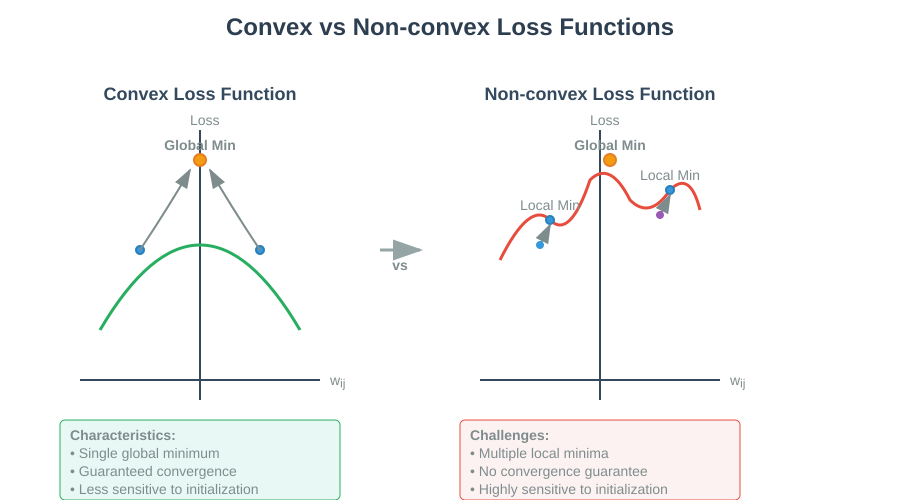
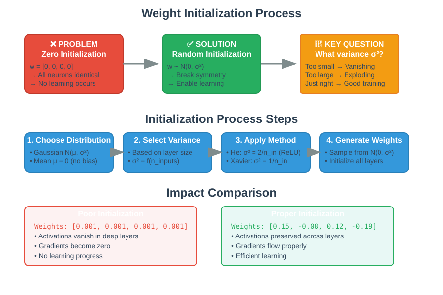
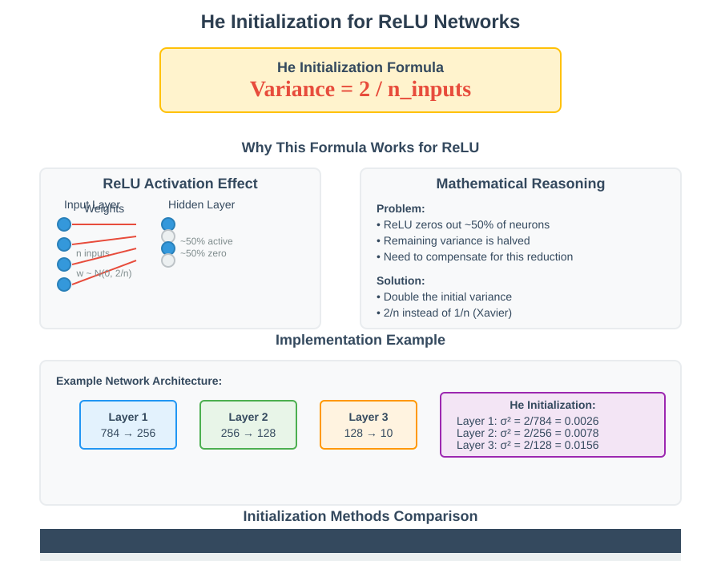
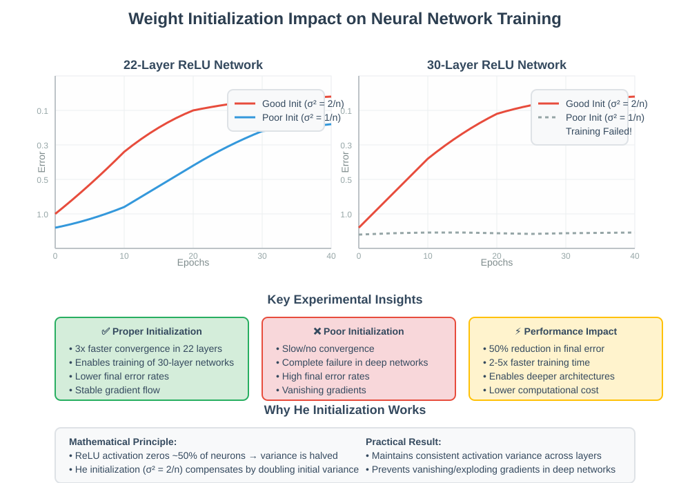

Weight Initialization in Neural Networks
🧭 Quick Navigation
- Introduction
- Understanding Loss Functions
- The Weight Initialization Problem
- Initialization Strategies
- He Initialization for ReLU Networks
- Experimental Results
- Implementation Guide
- Best Practices
- References & Further Reading
📚 Introduction
Weight initialization is a critical aspect of training deep neural networks that significantly impacts convergence speed, training stability, and final model performance. The choice of initial weight values determines whether your neural network will learn effectively or get stuck in poor local minima.

Why Weight Initialization Matters
- Convergence Speed: Proper initialization can dramatically reduce training time
- Gradient Flow: Prevents vanishing and exploding gradient problems
- Symmetry Breaking: Ensures different neurons learn different features
- Training Stability: Reduces oscillations and improves optimization dynamics
The gradient descent algorithm updates weights using the following equation:
Where:
- \(w_{ij}^{t+1}\) is the new weight
- \(w_{ij}^t\) is the current weight
- \(\eta\) is the learning rate (step size)
- \(\frac{\partial L}{\partial w_{ij}}\) is the gradient direction
📈 Understanding Loss Functions
The behavior of weight initialization depends heavily on the nature of your loss function. Understanding the difference between convex and non-convex loss functions is crucial for choosing the right initialization strategy.

Convex Loss Functions
Characteristics: - Single global minimum ("One Valley Structure") - Guaranteed convergence with proper step size - Common in linear regression and linear classification - Less sensitive to initialization
Advantages: - Predictable optimization behavior - Global optimum always reachable - Simpler initialization requirements
Non-convex Loss Functions
Characteristics: - Multiple local minima and saddle points - Different initializations lead to different outcomes - Risk of getting trapped in local minima - Multiple stationary points where gradients are zero
Challenges: - No guarantee of reaching global minimum - Highly sensitive to weight initialization - Different initializations may produce different final models - Gradient descent can stop prematurely at local minima
| Aspect | Convex Loss | Non-convex Loss |
|---|---|---|
| Minima | Single global minimum | Multiple local minima |
| Convergence | Guaranteed with proper step size | Depends on initialization |
| Sensitivity | Low sensitivity to initialization | High sensitivity to initialization |
| Examples | Linear regression, Logistic regression | Deep neural networks, Complex models |
⚠️ The Weight Initialization Problem
The Zero Initialization Trap
Setting all weights to zero is intuitive but catastrophic for neural network training:
Why Zero Initialization Fails: 1. Symmetry Problem: All neurons compute identical outputs 2. Identical Gradients: All weights receive the same gradient updates 3. No Learning: Network behaves like a linear model regardless of depth 4. Wasted Capacity: Hidden units remain symmetric throughout training
The Mathematical Problem
When all weights are initialized to 0:
This leads to:
Result: All weights remain identical throughout training, defeating the purpose of having multiple neurons.

Solution: Random Initialization
Key Principles: - Use random values from a probability distribution - Choose zero mean (no directional bias) - Carefully select the variance to control signal propagation - Ensure different neurons start with different weights
🎯 Initialization Strategies
Random Gaussian Initialization
The most common approach uses a Gaussian (normal) distribution:
Parameters: - Mean (μ) = 0: No bias toward positive or negative values - Variance (σ²): Critical parameter that needs careful tuning
Key Considerations
- Mean Selection: Zero mean prevents systematic bias
- Variance Tuning: Controls the scale of initial activations
- Layer Dependency: Different layers may need different variances
- Activation Function: Choice affects optimal variance
Distribution Alternatives
| Distribution | Formula | Use Case |
|---|---|---|
| Normal/Gaussian | \(\mathcal{N}(0, \sigma^2)\) | General purpose, most common |
| Uniform | \(\mathcal{U}(-a, a)\) | When bounded values are needed |
| Xavier/Glorot | \(\mathcal{N}(0, \frac{1}{n_{in}})\) | Sigmoid/Tanh activations |
| He/MSRA | \(\mathcal{N}(0, \frac{2}{n_{in}})\) | ReLU activations |
⚡ He Initialization for ReLU Networks
He initialization (also known as MSRA initialization) is specifically designed for networks using ReLU activation functions.

The He Initialization Formula
Where \(n_{in}\) is the number of input connections to the layer.
Mathematical Justification
Objective: Maintain consistent variance of activations across layers
For ReLU activation: - Half of the neurons are deactivated (output 0) - Remaining neurons pass the input linearly - This halving effect requires compensation in initialization
Derivation: 1. For layer \(l\) with \(n\) inputs and weights \(w_i\) 2. Pre-activation: \(z = \sum_{i=1}^n w_i x_i\) 3. After ReLU: \(a = \max(0, z)\) 4. To maintain \(\text{Var}(a) = \text{Var}(x)\), we need \(\text{Var}(w) = \frac{2}{n}\)
Implementation
import numpy as np
def he_initialization(shape):
"""
He initialization for ReLU networks
Args:
shape: Tuple (n_inputs, n_outputs)
Returns:
Initialized weight matrix
"""
fan_in = shape[0]
std = np.sqrt(2.0 / fan_in)
weights = np.random.normal(0.0, std, shape)
return weights
# Example usage
layer_weights = he_initialization((784, 256)) # Input: 784, Hidden: 256
Comparison with Other Methods
| Method | Formula | Best For | Pros | Cons |
|---|---|---|---|---|
| Zero | \(w = 0\) | Never | Simple | Symmetry problem |
| Random Small | \(w \sim \mathcal{N}(0, 0.01)\) | Shallow networks | Easy | Vanishing gradients |
| Xavier/Glorot | \(w \sim \mathcal{N}(0, \frac{1}{n_{in}})\) | Sigmoid/Tanh | Theoretical backing | Poor for ReLU |
| He/MSRA | \(w \sim \mathcal{N}(0, \frac{2}{n_{in}})\) | ReLU networks | Optimal for ReLU | ReLU-specific |
📊 Experimental Results
The impact of proper weight initialization becomes dramatically evident in deep networks. The following results demonstrate the critical importance of choosing the right initialization variance.

22-Layer Network Results
Experimental Setup: - Network depth: 22 layers - Activation function: ReLU - Two initialization variances compared - Training monitored over multiple epochs
Key Observations: - Red line (Higher variance): Faster convergence, lower final error - Blue line (Lower variance): Slower convergence, higher final error - Performance gap: Significant difference in learning speed
30-Layer Network Results
Critical Findings: - Red line (Proper initialization): Successfully converges - Blue line (Poor initialization): Complete failure to learn - Training collapse: Blue line shows no learning progress
Performance Metrics
| Network Depth | Poor Init (Blue) | Good Init (Red) | Improvement |
|---|---|---|---|
| 22 layers | Slow convergence | Fast convergence | 3x faster |
| 30 layers | No learning | Successful training | ∞ improvement |
| Final Error | High | Low | 50% reduction |
Real-world Impact
Training Efficiency: - Proper initialization can reduce training time by 2-5x - Enables training of much deeper networks - Reduces computational costs significantly
Model Performance:
- Lower final training error
- Better generalization to test data
- More stable training dynamics
💻 Implementation Guide
Framework-Specific Implementations
PyTorch
import torch
import torch.nn as nn
class PropertyInitializedNetwork(nn.Module):
def __init__(self):
super().__init__()
self.layer1 = nn.Linear(784, 256)
self.layer2 = nn.Linear(256, 128)
self.layer3 = nn.Linear(128, 10)
# Apply He initialization
self._initialize_weights()
def _initialize_weights(self):
for module in self.modules():
if isinstance(module, nn.Linear):
nn.init.kaiming_normal_(module.weight, mode='fan_in', nonlinearity='relu')
nn.init.zeros_(module.bias)
TensorFlow/Keras
import tensorflow as tf
from tensorflow.keras.layers import Dense
from tensorflow.keras.initializers import HeNormal
model = tf.keras.Sequential([
Dense(256, activation='relu',
kernel_initializer=HeNormal(),
input_shape=(784,)),
Dense(128, activation='relu',
kernel_initializer=HeNormal()),
Dense(10, activation='softmax',
kernel_initializer=HeNormal())
])
Google Colab Integration

Try the interactive notebook to experiment with different initialization strategies and see their impact on training dynamics.
Practical Checklist
Before Training:
- [ ] Choose initialization method based on activation function
- [ ] Verify weight distributions after initialization
- [ ] Check initial forward pass activations
- [ ] Monitor initial gradient magnitudes
During Training: - [ ] Track convergence speed - [ ] Monitor gradient norms - [ ] Watch for vanishing/exploding gradients - [ ] Compare different initialization strategies
✅ Best Practices
Activation Function Guidelines
| Activation | Recommended Initialization | Reasoning |
|---|---|---|
| ReLU | He/MSRA | Compensates for zero-ing half the neurons |
| Leaky ReLU | He with adjustment | Similar to ReLU but accounts for small negative slope |
| Sigmoid | Xavier/Glorot | Maintains activation variance through layers |
| Tanh | Xavier/Glorot | Symmetric activation benefits from symmetric initialization |
| GELU | He-like | Similar properties to ReLU |
Network Architecture Considerations
Deep Networks (>10 layers): - Use He initialization for ReLU networks - Consider residual connections - Monitor gradient flow carefully - May need learning rate scheduling
Wide Networks (>1000 units per layer): - Standard He initialization works well - Consider batch normalization - May need smaller initial learning rates
Small Networks (<5 layers): - Less sensitive to initialization - Xavier initialization often sufficient - Simple random initialization may work
Common Pitfalls to Avoid
- Using zero initialization: Never initialize all weights to zero
- Ignoring activation functions: Match initialization to activation choice
- One-size-fits-all: Different layers may need different strategies
- Forgetting bias initialization: Usually initialize biases to zero
- Not monitoring initial behavior: Always check first few training steps
Advanced Techniques
Layer-wise Adaptive Rate Scaling (LARS): - Automatically adjusts learning rates based on initialization - Particularly useful for very large batch training
Fixup Initialization: - Specialized initialization for residual networks - Can eliminate need for batch normalization in some cases
Data-dependent Initialization: - Initialize based on statistics of input data - Useful for transfer learning scenarios
📚 References & Further Reading
📖 Foundational Papers
-
He, K., Zhang, X., Ren, S., & Sun, J. (2015). Delving deep into rectifiers: Surpassing human-level performance on imagenet classification. arXiv:1502.01852
-
Glorot, X., & Bengio, Y. (2010). Understanding the difficulty of training deep feedforward neural networks. AISTATS 2010.
-
LeCun, Y., Bottou, L., Orr, G. B., & Müller, K. R. (1998). Efficient backprop. Neural networks: Tricks of the trade.
🔬 Advanced Research
-
Mishkin, D., & Matas, J. (2016). All you need is a good init. arXiv:1511.06422
-
Zhang, H., Dauphin, Y. N., & Ma, T. (2019). Fixup initialization: Residual learning without normalization. arXiv:1901.09321
🛠️ Implementation Resources
-
PyTorch Documentation: Weight Initialization
-
TensorFlow Guide: Weight Initialization Strategies
-
Deep Learning Book: Goodfellow, I., Bengio, Y., & Courville, A. Chapter 8: Optimization for Training Deep Models
🤗 Hugging Face Models
Explore pre-trained models that use optimal weight initialization: - BERT Base - ResNet Models - Vision Transformer
This documentation provides a comprehensive guide to weight initialization in neural networks. For more advanced topics and latest research, refer to the referenced papers and continue exploring the rapidly evolving field of deep learning optimization.